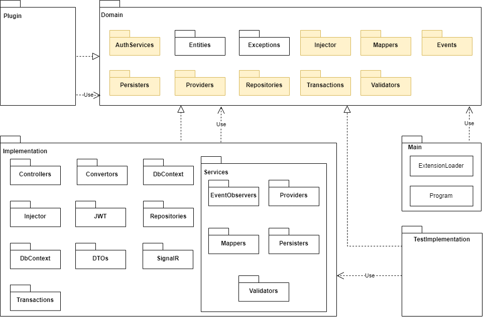
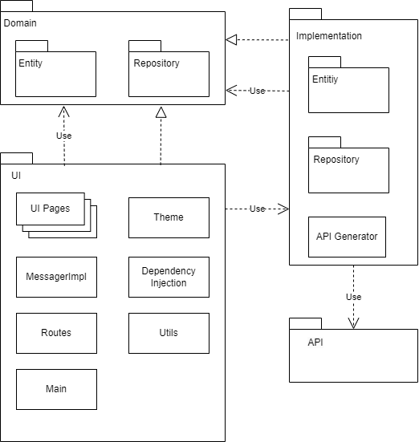

Project Organization
ASP.NET CORE SERVER
The server is structured following best practices regarding clean architecture, with a clear
separation between controllers, services and repositories. Dependencies between components
are based on interfaces, ensuring a high level of abstraction and flexibility. The system is
designed to be easily extendable, with the ability to add new features through plugins.
The solution is elegantly divided into four key projects:
► Domain, which acts as the backbone, housing interfaces for data repositories and
services, entities, and the event and transaction components. This project contains the
interfaces that are implemented in the other projects, ensuring a clear separation of
concerns.
Any developed plugin will have to depend on and implement interfaces from this project, witout
needing to depend on the Implementation project;
► Implementation, where the magic happens with concrete implementations, database
management, controllers, authentication, real-time communication, and client
notification;
► TestImplementation, ensuring reliability through unit tests for verifying
functionality;
► Main the powerhouse entry point responsible for loading plugins and
kickstarting the system. This modular structure enhances code clarity and manageability
while
boosting flexibility, making the system robust, scalable, and easily extendable.
FLUTTER CLIENT
The client application is organized into three packages:
► Domain, containing interfaces for entities, data
repositories, and a messaging service;
► Implementation, housing implementations for entities,
services, data repositories, and files needed for generating the API based on the OpenAPI
contract provided by the server, including a subpackage generated by OpenApiGenerator;
► UI which includes graphical interface elements, the framework for dependency injection,
and the blocks that bridge the graphical interface and application logic. Notably, the UI
package is the only Flutter package in the application, while the others are Dart packages
without graphical interface framework classes.

Server package diagram

Client package diagram